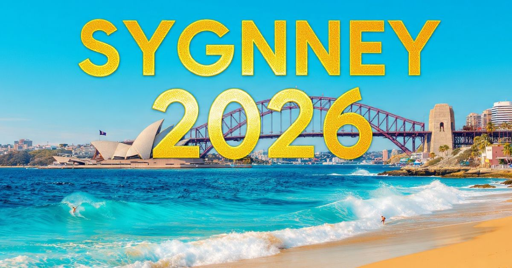

Sydney 2026: guia completo para viajar para a capital da Austrália
Introdução: a cidade da Ópera e das praias paradisíacas
Sydney é, sem dúvida, uma das cidades mais bonitas e vibrantes do mundo. Capital da Nova Gales do Sul e a maior cidade da Austrália, Sydney combina paisagens deslumbrantes, praias de tirar o fôlego, uma arquitetura icônica e uma cultura cosmopolita que cativa visitantes de todos os cantos do planeta. Seja para visitar a famosa Ópera de Sydney, surfar na Bondi Beach, atravessar a Harbour Bridge, explorar o Darling Harbour ou simplesmente apreciar o pôr do sol na Baía de Sydney, a cidade oferece experiências inesquecíveis para todos os perfis de viajantes.
Em 2026, Sydney continua sendo um dos destinos preferidos dos viajantes brasileiros. A cidade se prepara para receber turistas do mundo inteiro com uma infraestrutura cada vez mais moderna, mantendo seu charme natural e sua essência única. Com sua combinação de natureza, cultura, gastronomia e estilo de vida descontraído, a capital australiana é o destino perfeito para quem busca lazer, aventura e qualidade de vida.
Neste guia completo sobre Sydney, você vai encontrar tudo o que precisa saber para planejar sua viagem: a melhor época para visitar, as atrações imperdíveis, os melhores bairros para se hospedar, como se locomover pela cidade, dicas de gastronomia, compras e muito mais.
Nosso objetivo é que você chegue a Sydney preparado para aproveitar ao máximo cada minuto nessa cidade fascinante. Afinal, Sydney é mais do que um destino — é uma experiência que combina natureza, cultura, gastronomia e a famosa hospitalidade australiana em um só lugar.

A icônica Ópera de Sydney e a Harbour Bridge, símbolos da cidade
Melhor época para visitar Sydney
Sydney tem quatro estações bem definidas, com verões quentes e invernos amenos. A escolha da melhor época depende do que você busca na viagem.
Primavera (setembro a novembro) — Uma das melhores épocas para visitar Sydney. As temperaturas são agradáveis (entre 15°C e 25°C), as flores desabrocham nos jardins da cidade e os dias ficam mais longos. A cidade ganha vida após o inverno, com uma atmosfera vibrante e colorida. Os preços dos hotéis são moderados. É a época do Festival da Primavera e da Floração.
Verão (dezembro a fevereiro) — Época mais quente do ano, com temperaturas que podem ultrapassar 30°C. A cidade fica cheia de turistas, os preços são mais altos e as praias ficam lotadas. No entanto, o verão oferece uma programação intensa de eventos, festivais ao ar livre, noites quentes e a oportunidade de aproveitar as praias paradisíacas. É a época mais animada da cidade, com o famoso Réveillon em Sydney Harbour.
Outono (março a maio) — Muitos consideram o outono a melhor estação para visitar Sydney. As temperaturas são agradáveis (entre 15°C e 22°C), as folhas das árvores se transformam em um espetáculo de cores, e a cidade oferece uma atmosfera charmosa e relaxada. A alta temporada começa a diminuir após o verão, com preços mais acessíveis. É a época dos festivais gastronômicos.
Inverno (junho a agosto) — O inverno em Sydney é ameno, com temperaturas entre 8°C e 16°C. A cidade se enche de luzes de Natal e decorações especiais. É uma época mais tranquila, com menos turistas e preços mais baixos. Para quem não gosta de calor, esta é a melhor época. É também a época da baleia franca, que pode ser avistada na costa.
Dica: Se você busca um equilíbrio entre clima agradável e preços razoáveis, a primavera (setembro/novembro) e o outono (março/maio) são as melhores escolhas. Evite os meses de dezembro e janeiro (alta temporada de verão) se quiser economizar.
O que fazer em Sydney: atrações imperdíveis
Sydney tem uma lista quase infinita de atrações. Separamos as imperdíveis para que você não perca nada:
Ópera de Sydney — O símbolo máximo da Austrália e uma das construções mais icônicas do mundo. A Ópera de Sydney é Patrimônio Mundial da UNESCO e oferece uma programação cultural diversificada. A visita guiada ao interior da ópera é uma experiência imperdível.
Harbour Bridge — A ponte mais famosa da Austrália, com sua estrutura imponente. A Ponte da Baía de Sydney oferece uma vista espetacular da cidade. A experiência mais radical é a BridgeClimb, que permite subir até o topo da ponte e ter uma vista de 360 graus.
Bondi Beach — A praia mais famosa da Austrália, com sua areia dourada, ondas perfeitas para o surfe e uma atmosfera descontraída. Bondi é o lugar para relaxar, tomar sol, surfar e curtir o estilo de vida australiano. A caminhada costeira de Bondi a Coogee é imperdível.
Darling Harbour — A região portuária mais animada de Sydney, com bares, restaurantes, lojas, o Aquário de Sydney, o Zoológico de Sydney (Taronga) e o centro de convenções. Darling Harbour é o lugar certo para um jantar com vista para o mar.
Royal Botanic Garden — Os jardins botânicos mais famosos da Austrália, com uma vista espetacular da Ópera e da Harbour Bridge. O jardim é o lugar perfeito para um piquenique, um passeio tranquilo ou simplesmente apreciar a paisagem.
Taronga Zoo — O zoológico mais famoso da Austrália, com uma coleção impressionante de animais australianos (cangurus, coalas, ornitorrincos, etc.) e uma vista deslumbrante da Baía de Sydney. O zoológico é uma atração imperdível para famílias.
The Rocks — O bairro histórico de Sydney, com ruas de paralelepípedos, galerias de arte, pubs tradicionais, mercados e lojas de artesanato. The Rocks é o lugar para sentir a história da colonização australiana.
Passeio de barco pela Baía de Sydney — Uma das experiências mais bonitas de Sydney. Faça um passeio de barco pela Baía de Sydney, passando pela Ópera, pela Harbour Bridge e pelas praias. O pôr do sol na baía é espetacular.
Manly Beach — Uma praia mais tranquila que Bondi, com uma atmosfera familiar. Manly é acessível por ferry (travessia de 30 minutos) e oferece uma vista espetacular da Baía de Sydney.
Onde ficar em Sydney: melhores bairros
Escolher onde se hospedar é uma das decisões mais importantes da viagem. Cada bairro de Sydney tem sua personalidade:
Centro (CBD) — O coração de Sydney, com fácil acesso a todas as principais atrações. Ficar no CBD significa estar perto de tudo. Os preços são elevados, mas a localização é imbatível.
The Rocks — O bairro histórico e charmoso de Sydney, com ruas de paralelepípedos, pubs tradicionais e uma atmosfera única. Ficar em The Rocks significa estar perto da história e das atrações. Os preços são elevados.
Darling Harbour — A região portuária mais animada de Sydney, com bares, restaurantes e atrações. Ficar em Darling Harbour significa estar perto da vida noturna e da cultura. Os preços são variados.
Bondi Beach — O bairro da praia mais famosa da Austrália. Ficar em Bondi significa estar perto da praia e do estilo de vida australiano. Os preços são elevados.
Surry Hills — O bairro descolado de Sydney, com cafés, restaurantes, lojas vintage e uma atmosfera alternativa. Ficar em Surry Hills significa estar perto da cultura local. Os preços são moderados.
Dica: Para quem visita Sydney pela primeira vez, o CBD ou The Rocks são as melhores opções pela localização. Para quem busca economia e autenticidade, Surry Hills é a melhor escolha.
Como chegar a Sydney
Chegar a Sydney é fácil, com voos diretos do Brasil e conexões eficientes.
Avião — Aeroporto:
- Aeroporto Kingsford Smith (SYD) — O principal aeroporto internacional da Austrália. Recebe voos diretos do Brasil com companhias como Qantas, LATAM e outras. Fica a cerca de 10 km do centro e tem conexões de trem, ônibus e transfer.
Como ir do aeroporto ao centro:
- Trem: Airport Link para o CBD (AUD$ 18-20, 15-20 min).
- Ônibus: Para o centro (AUD$ 5-10, 30-40 min).
- Táxi/Uber: AUD$ 50-70.
Visto e documentação: Brasileiros precisam de visto eletrônico (ETA - Electronic Travel Authority) para entrar na Austrália para turismo. O ETA pode ser solicitado online.
Transporte em Sydney: como se locomover
Sydney tem uma excelente rede de transporte público, e a cidade também é muito agradável para explorar a pé.
Transporte público:
- Trens: Conectam o centro aos subúrbios.
- Ônibus: Cobrem toda a cidade.
- Ferries: Os famosos barcos de Sydney, que oferecem uma vista espetacular da baía.
- Tarifa: AUD$ 3-8 por viagem (dependendo da distância).
- Use o cartão Opal (cartão recarregável) para pagar.
Bicicletas (Bike Share):
- Sistema de compartilhamento de bicicletas disponível.
- Aluguel por dia: AUD$ 10-15.
Táxis e aplicativos:
- Tarifa inicial: AUD$ 4,00 + AUD$ 2,20 por km.
- Uber disponível.
Dica: O transporte público em Sydney é eficiente e o cartão Opal é aceito em todos os modais. Os ferries são uma forma charmosa de explorar a baía.
Gastronomia em Sydney: o que comer
Sydney é um paraíso gastronômico, com influências asiáticas, europeias e australianas. Confira o que não perder:
Peixe e frutos do mar frescos — Sydney é famosa por seus frutos do mar frescos. Experimente o peixe fresco, as ostras (Sydney rock oysters), os camarões e as vieiras.
Meat Pie — A torta de carne australiana, recheada com carne moída e molho. É uma das comidas de rua mais populares do país.
Vegemite — A pasta de fermento australiana, amada por uns e odiada por outros. Experimente no café da manhã com torradas.
Barramundi — O peixe mais famoso da Austrália, com carne branca e sabor suave. Ideal para quem gosta de peixe.
Flat White — O café australiano por excelência, um café com leite cremoso e suave. Experimente em qualquer cafeteria.
Mercados gastronômicos:
- Fish Market: O maior mercado de peixes do Hemisfério Sul, com frutos do mar frescos e restaurantes.
- Paddy's Markets: Mercado com comidas de rua, frutas e produtos locais.
Compras em Sydney: o que levar para casa
Sydney é um paraíso para as compras, com opções para todos os gostos.
Pitt Street Mall: A rua de compras mais famosa de Sydney, com lojas de moda, acessórios e eletrônicos.
Queen Victoria Building: Um shopping histórico com arquitetura deslumbrante, com lojas de luxo e boutiques.
The Rocks Markets: Feira de artesanato e antiguidades nos finais de semana.
Souvenirs:
- Miniaturas da Ópera de Sydney e da Harbour Bridge
- Chaveiros e imãs com símbolos da Austrália
- Pelúcias de cangurus e coalas
- Produtos de Vegemite e outros alimentos típicos
- Camisetas com estampas da Austrália
Dicas de economia em Sydney
- Use o cartão Opal — O cartão recarregável para transporte público oferece tarifas mais baixas.
- Alimente-se em mercados — Em vez de restaurantes caros, experimente os mercados (Fish Market, Paddy's Markets).
- Visite atrações gratuitas — Muitas atrações, como o Royal Botanic Garden, são gratuitas.
- Fique em bairros econômicos — Bairros como Surry Hills e Newtown têm hotéis mais baratos que o CBD.
Sydney é uma cidade que combina natureza, cultura e estilo de vida de forma única! Use o cartão Opal para economizar no transporte, não deixe de visitar a Ópera de Sydney e aproveite as praias paradisíacas. E o mais importante: relaxe e curta o estilo de vida australiano!
❓ Perguntas Frequentes sobre Sydney
Recomenda-se pelo menos 5 a 7 dias para explorar Sydney com calma. Com 5 dias, você consegue visitar as principais atrações. Com 7 dias, pode incluir excursões para as Blue Mountains ou Hunter Valley (vinícolas).
A primavera (setembro/novembro) e o outono (março/maio) são as melhores épocas, com temperaturas agradáveis. O verão é quente e lotado. O inverno é ameno e mais tranquilo.
Sim. Brasileiros precisam de visto eletrônico (ETA) para turismo na Austrália. O ETA pode ser solicitado online com antecedência.
Uma viagem de 7 dias para Sydney custa entre R$ 8.000 e R$ 20.000 (incluindo passagens, hospedagem, alimentação e atrações).
Dia 1: Ópera de Sydney, Harbour Bridge, The Rocks; Dia 2: Bondi Beach, Royal Botanic Garden, Darling Harbour; Dia 3: Taronga Zoo, Passeio de barco pela Baía de Sydney, Manly Beach.
Sim. Sydney é uma cidade segura para turistas. Como em qualquer grande cidade, tome cuidados básicos com objetos de valor.
O CBD e The Rocks são as melhores opções para turistas, com localização central e fácil acesso às atrações. Surry Hills é uma ótima alternativa para quem busca economia e autenticidade.
No verão: roupas leves, biquíni/maiô, protetor solar, chapéu, chinelos. No inverno: casaco leve. Calçados confortáveis para caminhar. Adaptador de tomada (tipo I).